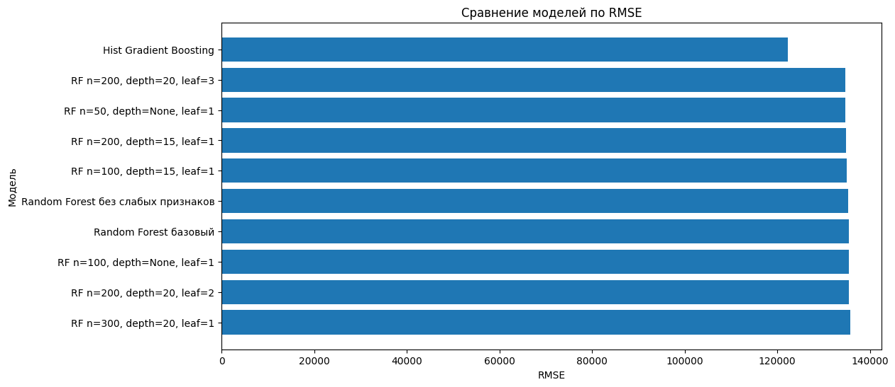

Лабораторная работа 5: Регрессия с применением Scikit-Learn
Цели
- Изучить применение библиотеки Scikit-Learn для решения задачи регрессии.
- Освоить базовые этапы построения модели машинного обучения для предсказания числового значения.
- Исследовать качество разных моделей регрессии на задаче предсказания стоимости недвижимости.
- Сравнить влияние отбора признаков, настройки гиперпараметров и выбора алгоритма на итоговую ошибку модели.
Задачи
В рамках лабораторной работы требовалось:
- Загрузить и проанализировать данные о стоимости недвижимости, разделить данные на признаки и целевую переменную
- Обучить модели регрессии с помощью Scikit-Learn
- Оценить качество моделей с использованием метрик
MAE,MSEиRMSE - Проанализировать важность признаков и исключить наименее значимые признаки, затем проверить изменение качества моделей
- Исследовать параметры модели
RandomForestRegressor - Проверить дополнительные модели регрессии и сравнить их с базовыми моделями
- Рассмотреть способ интеграции обученной ML-модели в веб-приложение на Flask, Django или FastAPI
Ход работы
1. Загрузка и анализ данных
В качестве исходных данных использовался датасет с информацией о недвижимости в округе Кинг, штат Вашингтон, США.
Целью задачи являлось предсказание стоимости дома на основе его характеристик.
Загрузка обучающей выборки выполнялась с помощью функции read_excel(). После загрузки была выполнена проверка первых строк таблицы, а также был проверен размер обучающей выборки.
Для получения общей информации о данных использовался метод info().
2. Разделение данных на признаки и целевую переменную
Значения целевой переменной (цена недвижимости) были вынесены в отдельную переменную:
training_values = training_data[target_variable_name]
После этого из обучающей таблицы был удален столбец с ценой, чтобы получить таблицу входных признаков:
training_points = training_data.drop(target_variable_name, axis=1)
Таким образом, были получены:
training_values— настоящие значения цен домовtraining_points— признаки, по которым модель должна предсказывать цену
3. Обучение базовых моделей регрессии
В качестве базовых моделей были рассмотрены:
LinearRegressionRandomForestRegressor
Тестовая выборка была загружена аналогично обучающей:
test_data = pd.read_excel('predict_house_price_test_data.xlsx')
Целевая переменная была отделена от входных признаков:
test_values = test_data[target_variable_name]
test_points = test_data.drop(target_variable_name, axis=1)
В результате были получены:
test_values— настоящие цены объектов недвижимости из тестовой выборкиtest_points— признаки объектов недвижимости из тестовой выборки
Для получения предсказаний использовался метод predict():
test_predictions_linear = linear_regression_model.predict(test_points)
test_predictions_random_forest = random_forest_model.predict(test_points)
Качество моделей оценивалось с помощью метрик регрессии:
- MAE
- MSE
- RMSE
Для расчета метрик использовались функции из sklearn.metrics.
Расчет ошибок для линейной регрессии:
mean_absolute_error_linear_model = mean_absolute_error(
test_values,
test_predictions_linear
)
mean_squared_error_linear_model = mean_squared_error(
test_values,
test_predictions_linear
)
Расчет ошибок для случайного леса:
mean_absolute_error_random_forest_model = mean_absolute_error(
test_values,
test_predictions_random_forest
)
mean_squared_error_random_forest_model = mean_squared_error(
test_values,
test_predictions_random_forest
)
Пояснение
MAE показывает среднюю абсолютную ошибку модели. MSE показывает среднюю квадратичную ошибку и сильнее штрафует большие отклонения. RMSE — корень из MSE. Эта метрика удобна для интерпретации, потому что измеряется в тех же единицах, что и целевая переменная, то есть в долларах.
Результаты базовых моделей:
| Модель | MAE | MSE | RMSE |
|---|---|---|---|
| Linear Regression | 126852.51 | 40756840000 | 201883.24 |
| Random Forest базовый | 70896.79 | 18364750000 | 135516.61 |
По результатам сравнения видно, что модель случайного леса справилась с задачей значительно лучше линейной регрессии.
Значение RMSE у RandomForestRegressor оказалось меньше, чем у LinearRegression, поэтому случайный лес был выбран как более сильная базовая модель для дальнейших экспериментов.
4. Анализ важности признаков
Для анализа влияния признаков на результат была использована модель RandomForestRegressor.
У обученной модели была получена оценка важности признаков:
random_forest_model.feature_importances_
Для удобного представления результатов была создана таблица:
feature_importance = pd.DataFrame(columns=[
'Название признака',
'Важность признака'
])
feature_importance['Название признака'] = training_points.keys()
feature_importance['Важность признака'] = random_forest_model.feature_importances_
Затем признаки были отсортированы по убыванию важности:
feature_importance.sort_values(
by='Важность признака',
ascending=False
)
Наиболее значимыми признаками оказались:
- Оценка риелтора
- Жилая площадь
- Широта
- Долгота
- Год постройки
Наименее значимыми признаками оказались:
- Год реновации
- Количество этажей
- Спальни
- Состояние
- Площадь подвала
5. Исключение наименее значимых признаков
В рамках самостоятельной части были исключены пять признаков с наименьшей важностью:
low_importance_features = [
'Год реновации',
'Количество этажей',
'Спальни',
'Состояние',
'Площадь подвала'
]
После этого были сформированы новые обучающая и тестовая выборки:
training_points_reduced = training_points.drop(
low_importance_features,
axis=1
)
test_points_reduced = test_points.drop(
low_importance_features,
axis=1
)
На сокращенном наборе признаков были повторно обучены модели линейной регрессии и случайного леса.
Результаты сравнения:
| Модель | MAE | MSE | RMSE |
|---|---|---|---|
| Linear Regression | 126852.51 | 40756840000 | 201883.24 |
| Linear Regression без слабых признаков | 128146.14 | 41484850000 | 203678.30 |
| Random Forest базовый | 70896.79 | 18364750000 | 135516.61 |
| Random Forest без слабых признаков | 71150.49 | 18301270000 | 135282.18 |
После исключения слабых признаков качество модели RandomForestRegressor немного улучшилось: RMSE уменьшилось с 135516.61 до 135282.18.
Однако для линейной регрессии результат ухудшился: RMSE выросло с 201883.24 до 203678.30.
6. Исследование параметров Random Forest
Далее были исследованы параметры модели RandomForestRegressor.
Рассматривались следующие параметры:
n_estimators— количество деревьев в лесуmax_depth— максимальная глубина дереваmin_samples_leaf— минимальное количество объектов в листе
Пример создания модели с заданными параметрами:
model = ensemble.RandomForestRegressor(
n_estimators=200,
max_depth=20,
min_samples_leaf=3,
random_state=42,
n_jobs=-1
)
Параметр n_jobs=-1 использовался для ускорения обучения модели за счет использования всех доступных ядер процессора.
Были проверены разные комбинации параметров. Лучшие результаты среди вариантов случайного леса:
| Модель | MAE | MSE | RMSE |
|---|---|---|---|
| RF n=200, depth=20, leaf=3 | 70596.74 | 18125590000 | 134631.32 |
| RF n=50, depth=None, leaf=1 | 71272.34 | 18143060000 | 134696.19 |
| RF n=200, depth=15, leaf=1 | 70925.67 | 18191330000 | 134875.23 |
| RF n=100, depth=15, leaf=1 | 71211.92 | 18235830000 | 135040.11 |
| Random Forest базовый | 70896.79 | 18364750000 | 135516.61 |
Лучший результат среди моделей Random Forest показала модель со следующими параметрами:
n_estimators= 200max_depth= 20min_samples_leaf= 3
Для этой модели значение RMSE составило 134631.32, тогда как у базового случайного леса RMSE было равно 135516.61.
7. Исследование дополнительных моделей регрессии
Кроме линейной регрессии и случайного леса были рассмотрены дополнительные модели регрессии:
DecisionTreeRegressorExtraTreesRegressorGradientBoostingRegressorHistGradientBoostingRegressor
Пример списка моделей для эксперимента:
other_models = [
(
'Decision Tree',
DecisionTreeRegressor(random_state=42)
),
(
'Extra Trees',
ExtraTreesRegressor(
n_estimators=200,
random_state=42,
n_jobs=-1
)
),
(
'Gradient Boosting',
GradientBoostingRegressor(
n_estimators=200,
learning_rate=0.05,
max_depth=3,
random_state=42
)
),
(
'Hist Gradient Boosting',
HistGradientBoostingRegressor(
max_iter=300,
learning_rate=0.05,
max_leaf_nodes=31,
random_state=42
)
)
]
Для оценки моделей была написана вспомогательная функция:
def evaluate_model(model, train_X, train_y, test_X, test_y, model_name):
model.fit(train_X, train_y)
predictions = model.predict(test_X)
mae = mean_absolute_error(test_y, predictions)
mse = mean_squared_error(test_y, predictions)
rmse = np.sqrt(mse)
return {
'Модель': model_name,
'MAE': mae,
'MSE': mse,
'RMSE': rmse
}
Итоговые результаты сравнения моделей:
| Модель | MAE | MSE | RMSE |
|---|---|---|---|
| Hist Gradient Boosting | 67889.44 | 14969960000 | 122351.79 |
| RF n=200, depth=20, leaf=3 | 70596.74 | 18125590000 | 134631.32 |
| RF n=50, depth=None, leaf=1 | 71272.34 | 18143060000 | 134696.19 |
| RF n=200, depth=15, leaf=1 | 70925.67 | 18191330000 | 134875.23 |
| RF n=100, depth=15, leaf=1 | 71211.92 | 18235830000 | 135040.11 |
| Random Forest без слабых признаков | 71150.49 | 18301270000 | 135282.18 |
| Random Forest базовый | 70896.79 | 18364750000 | 135516.61 |
| Extra Trees | 72038.26 | 19086620000 | 138154.32 |
| Gradient Boosting | 78886.73 | 19215750000 | 138620.87 |
| Decision Tree | 102076.31 | 40123210000 | 200307.79 |
| Linear Regression | 126852.51 | 40756840000 | 201883.24 |
| Linear Regression без слабых признаков | 128146.14 | 41484850000 | 203678.30 |
Для наглядного сравнения моделей был построен график значений RMSE:

Наилучшее качество показала модель HistGradientBoostingRegressor.
Ее результат:
| Метрика | Значение |
|---|---|
| MAE | 67889.44 |
| MSE | 14969960000 |
| RMSE | 122351.79 |
Базовый RandomForestRegressor имел значение RMSE = 135516.61.
Улучшение по RMSE составило:
135516.61 - 122351.79 = 13164.82
В процентном выражении ошибка уменьшилась примерно на 9.72%.
8. Интеграция обученной модели в веб-приложение
Обученную модель машинного обучения можно интегрировать в веб-приложение, реализованное с помощью Flask, Django или FastAPI.
Пример интеграции с FastAPI:
from fastapi import FastAPI
from pydantic import BaseModel
import joblib
import pandas as pd
app = FastAPI()
model = joblib.load('house_price_model.pkl')
class HouseFeatures(BaseModel):
bedrooms: int
bathrooms: float
living_area: float
total_area: float
floors: float
waterfront: int
viewed: int
condition: int
grade: int
area_without_basement: float
basement_area: float
year_built: int
year_renovated: int
latitude: float
longitude: float
@app.post('/predict')
def predict_price(features: HouseFeatures):
input_data = pd.DataFrame([{
'Спальни': features.bedrooms,
'Ванные': features.bathrooms,
'Жилая площадь': features.living_area,
'Общая площадь': features.total_area,
'Количество этажей': features.floors,
'Вид на воду': features.waterfront,
'Просмотрены ранее': features.viewed,
'Состояние': features.condition,
'Оценка риелтора': features.grade,
'Площадь без подвала': features.area_without_basement,
'Площадь подвала': features.basement_area,
'Год постройки': features.year_built,
'Год реновации': features.year_renovated,
'Широта': features.latitude,
'Долгота': features.longitude
}])
prediction = model.predict(input_data)[0]
return {
'predicted_price': prediction
}
В случае Flask логика будет похожей: пользователь отправляет данные через HTML-форму или POST-запрос, сервер преобразует их в таблицу pandas.DataFrame, передает в модель и возвращает предсказанную цену.
В случае Django модель можно подключить во view-функции или class-based view. Пользователь заполняет форму, данные проходят валидацию, после чего передаются в ML-модель. Результат можно отобразить на HTML-странице.
Пояснение
Важно, чтобы признаки, которые приходят в веб-приложение, имели тот же порядок, те же названия и тот же формат, что и признаки, использованные при обучении модели. Если при обучении выполнялась дополнительная предобработка данных, ее также нужно сохранить и использовать в веб-приложении.
Выводы
В ходе выполнения лабораторной работы была изучена задача регрессии на примере предсказания стоимости недвижимости.
Были выполнены основные этапы работы с ML-моделью:
- загрузка данных
- анализ структуры данных
- разделение данных на признаки и целевую переменную
- обучение моделей регрессии
- получение предсказаний на тестовой выборке
- оценка качества моделей с помощью MAE, MSE и RMSE
- анализ важности признаков
- настройка параметров модели
- сравнение нескольких алгоритмов машинного обучения
Базовая модель линейной регрессии показала худший результат среди основных моделей: ее RMSE составило 201883.24.
Модель случайного леса справилась с задачей значительно лучше: базовый RandomForestRegressor показал RMSE = 135516.61.
После настройки параметров случайного леса удалось немного улучшить результат. Лучший вариант RandomForestRegressor имел параметры n_estimators = 200, max_depth = 20, min_samples_leaf = 3 и показал RMSE = 134631.32.
Наилучший результат среди всех рассмотренных моделей показала модель HistGradientBoostingRegressor. Ее значение RMSE составило 122351.79, что примерно на 9.72% лучше результата базового случайного леса.
Также была рассмотрена возможность интеграции обученной модели в веб-приложение. Был описан общий алгоритм интеграции модели с Flask, Django или FastAPI.
Ссылка на доску Colab: